Past research · A quantitative study and a qualitative study
Brain–Machine Ratio (BMR)
In a creative process shared by people and machines, which part should each take, and how can that division be measured?
The Brain–Machine Ratio (BMR) asks how creative work should be divided between the designer's judgment and the machine's capacity.
It is studied in two ways, side by side. The quantitative study measures how the work divides today, task by task. The qualitative study traces how that division came to be, through six centuries of creative tools.
Two studies
(a)
Quantitative study
The BMR quadrant sorts creative tasks by two questions: do people want to do the task or only have to, and can machines do it? The upper half is what people should lead; the lower half is what they can hand to machines. BMR 1.0 measures capability, the ratio of human to machine input in each task. BMR 2.0 multiplies that ratio by subjectivity, the will people bring to a task. BMR 3.0 is about trust: AI that automates what is easy and safe to delegate, and augments what is hard and cannot be delegated. Design teams at Alibaba and Tencent have used it to build teams and organize creative workflows (IEEE MIPR 2021).
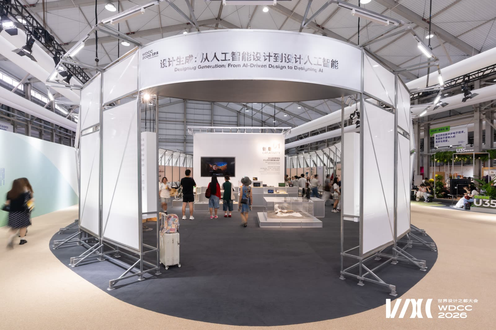
(b)
Qualitative study: A History of Creative Tools
From perspective and photography to computers, software and AI, each change in tools has altered the threshold, the process and the possibilities of creative work. The study follows three threads from 1400 to 2026: technology brings new capabilities, tools turn them into practice, and ideas keep asking what creating means. The first edition was completed in 2023; the second, in 2026, adds generation, reasoning, agents and world models. Its nine-panel timeline was shown at the WDCC 2026 Theme Exhibition in Shanghai. Funded by the National Social Science Fund of China (2024–2027).
(a) Quantitative study · the BMR quadrant
Redrawn from Ling Fan, From Universality of Computation to the Universality of Imagination: A Catalog on Design and Artificial Intelligence (Tongji University Press, 2019).
(b) Qualitative study · exhibition and timeline
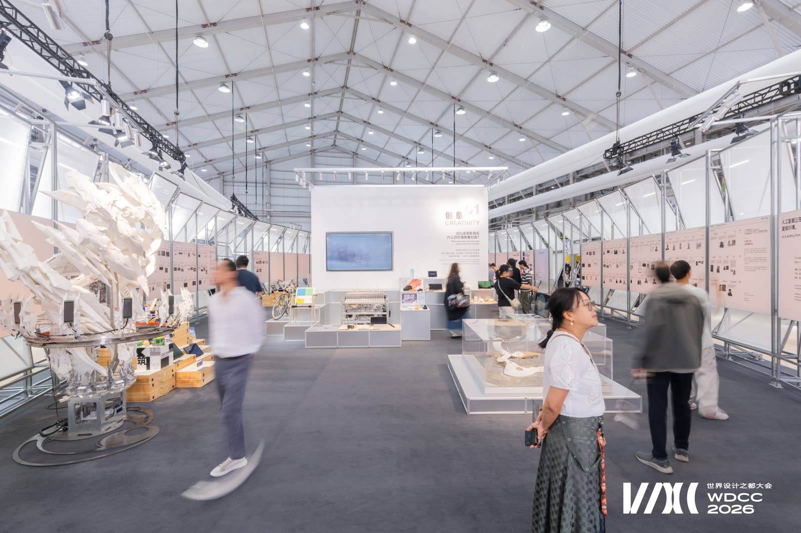
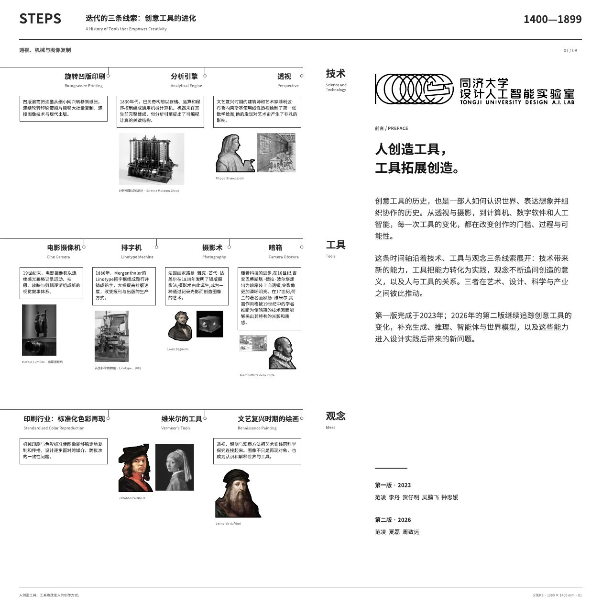
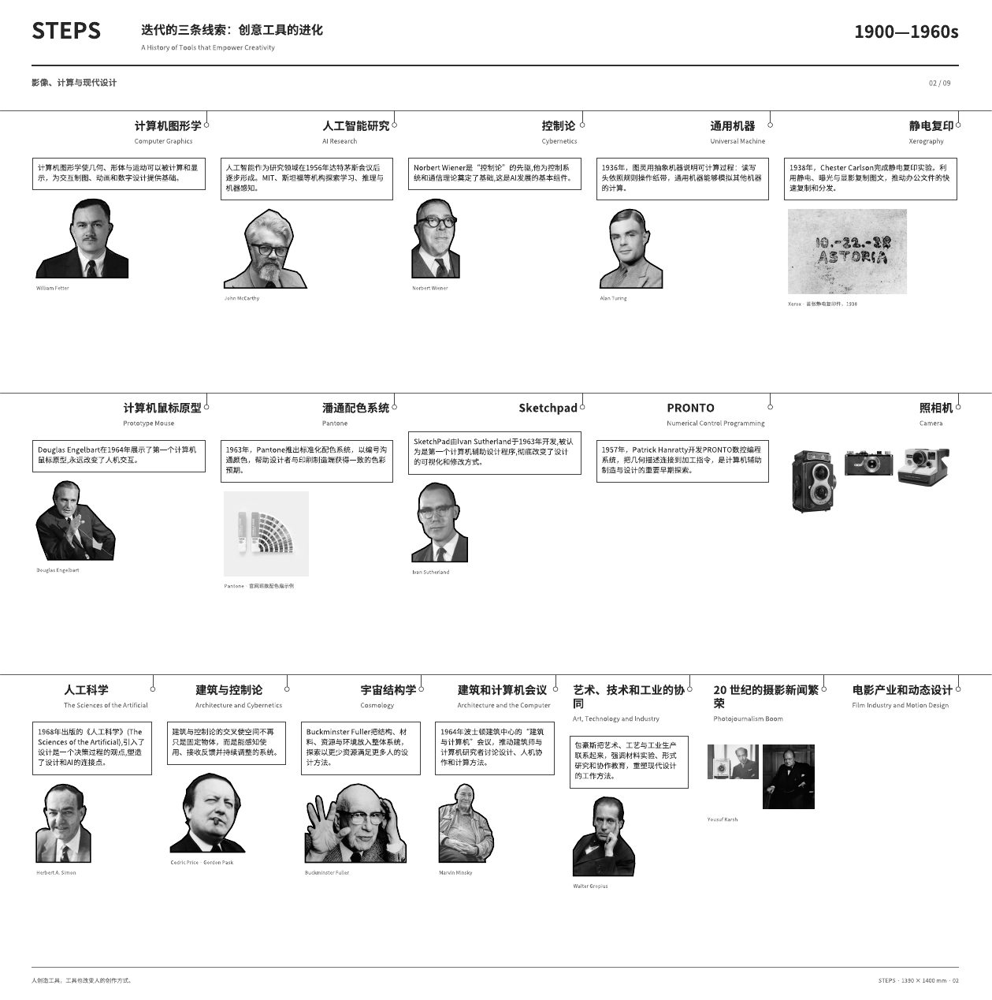
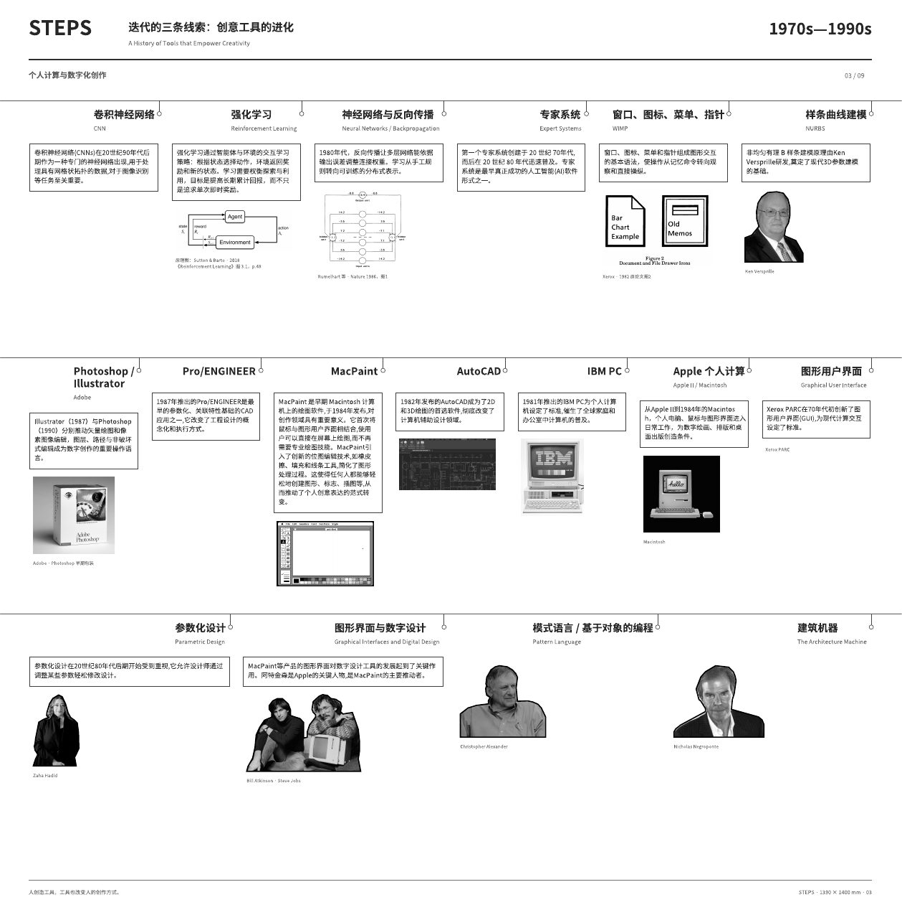
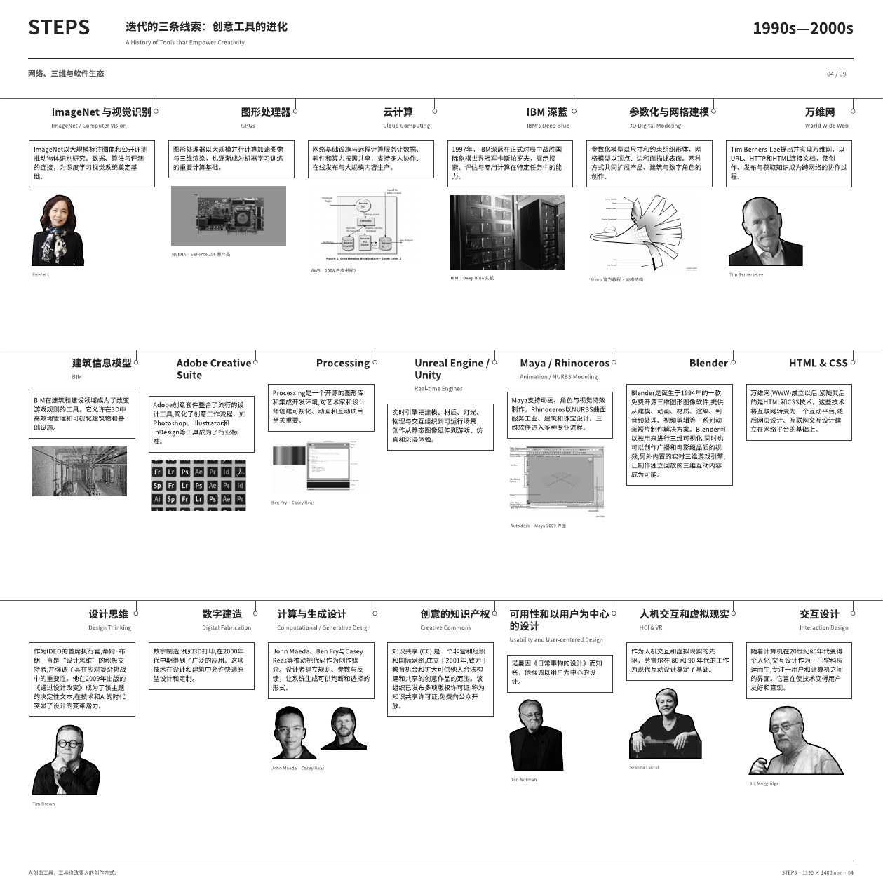
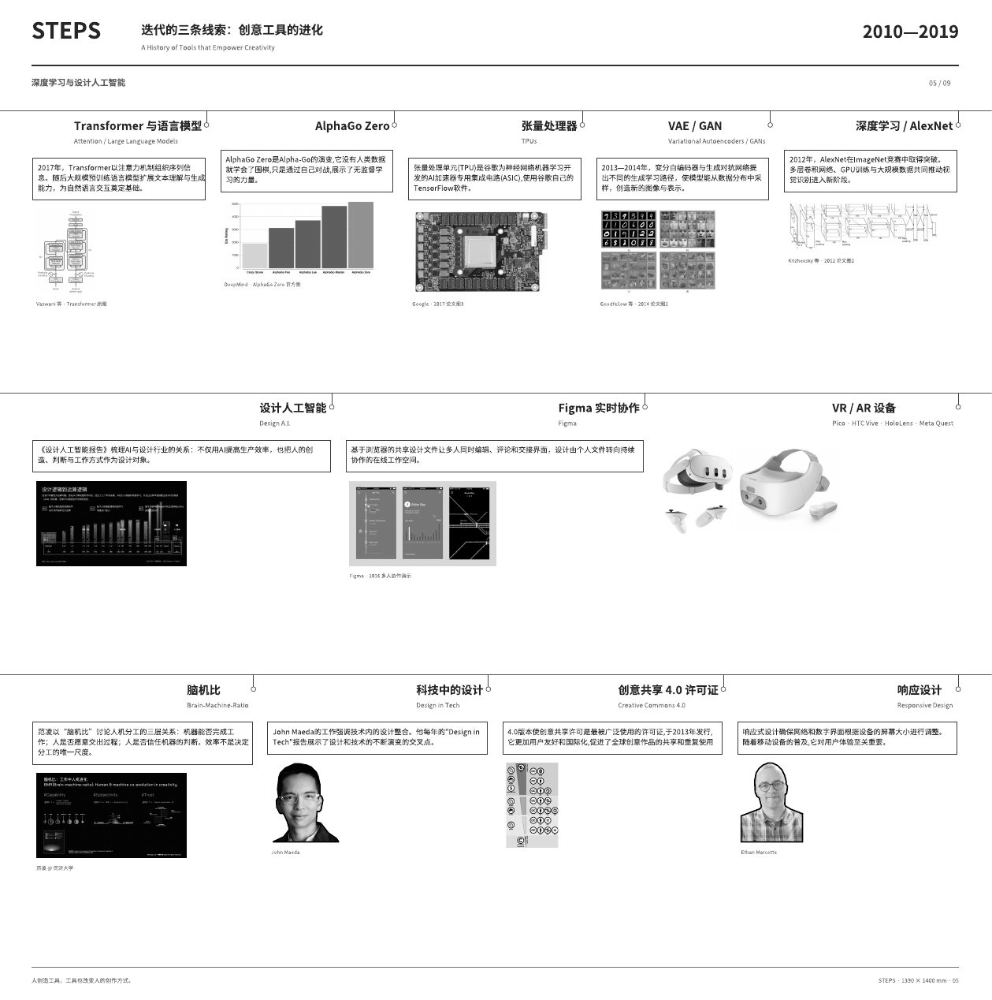
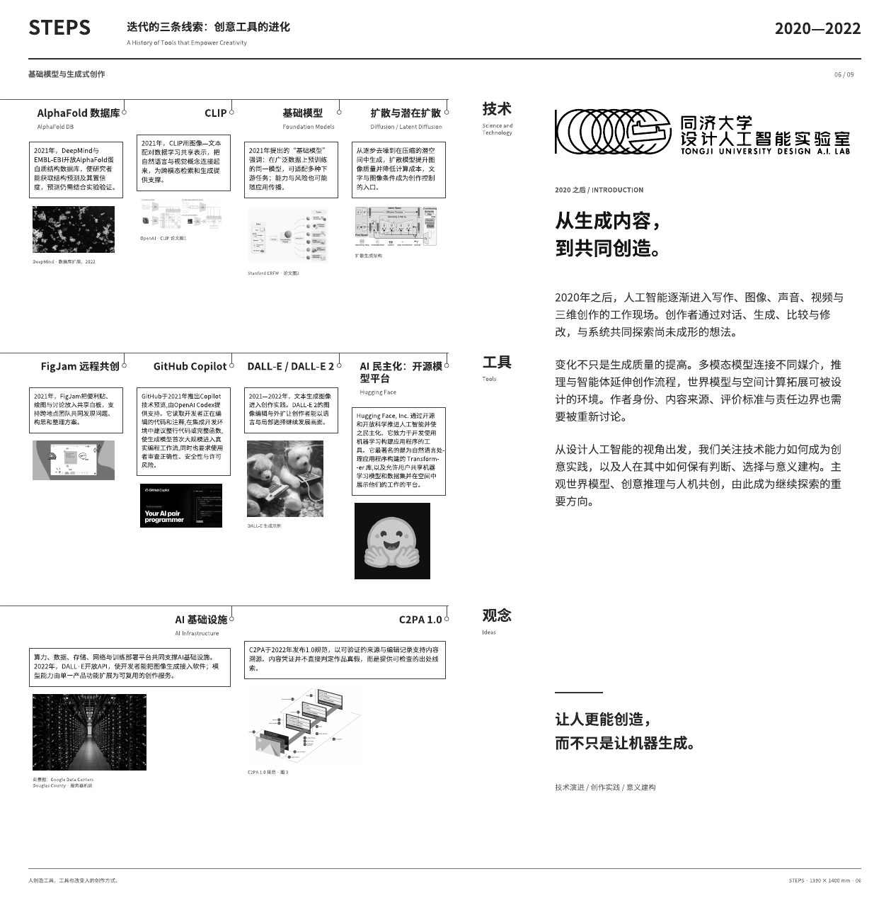
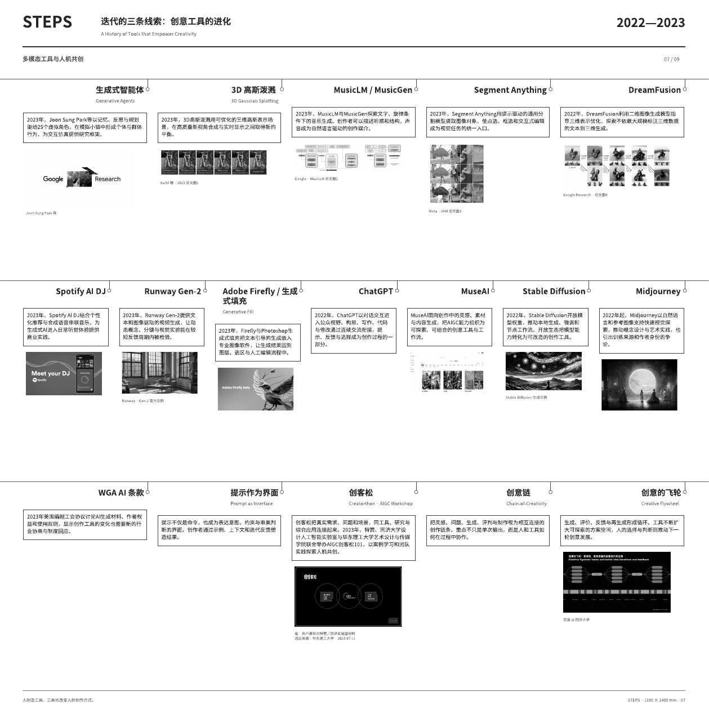
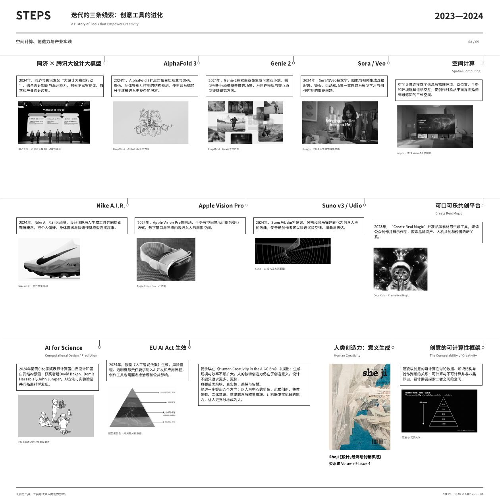
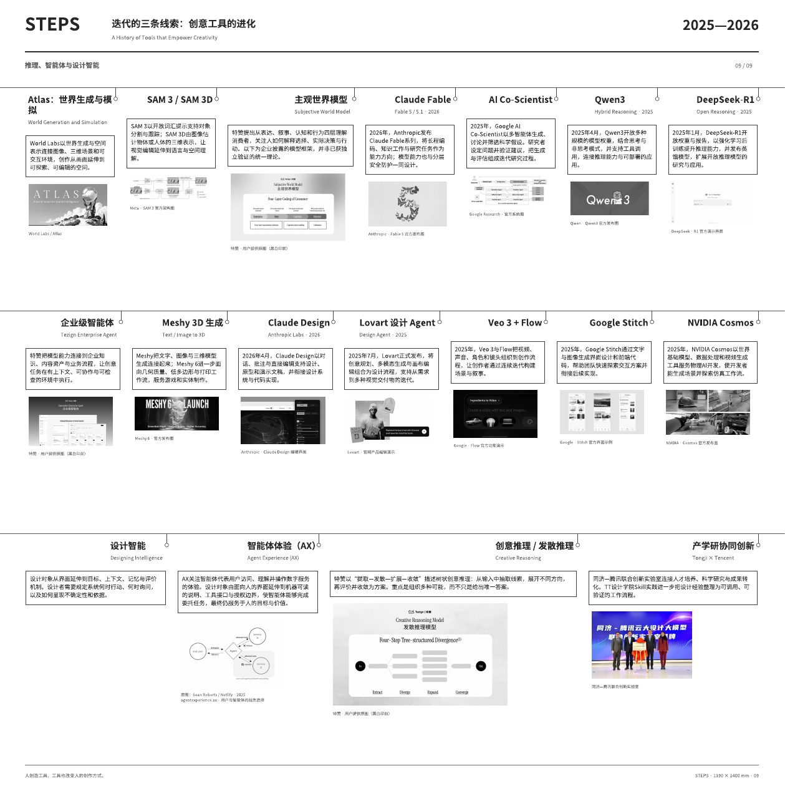
Facts
- First set out in
- From Universality of Computation to the Universality of Imagination (2019)
- Paper
- The Brain-Machine-Ratio model for designer and AI collaboration (IEEE MIPR 2021)
- Used by
- Design teams at Alibaba and Tencent
- Timeline
- nine panels, 1400 to 2026; first edition 2023, second edition 2026
- Exhibited
- WDCC 2026 Theme Exhibition, "Designing Generation: From AI-Driven Design to Designing AI", World Design Cities Conference, Shanghai
- Funding
- National Social Science Fund of China, Research on the Evolution of Design Tools in the Era of Artificial Intelligence (2024–2027); Ministry of Education (2020); Shanghai art and technology program (2019)
- Timeline team
- Ling Fan with Li Dan, He Ziming, Wu Pengfei and Zhong Siyuan (2023); Ling Fan with Xia Lei and Zhou Zhiyuan (2026)
- Research line
- Human–AI collaboration, Design AI Lab